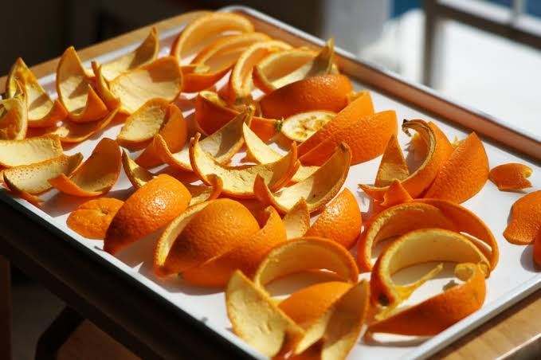
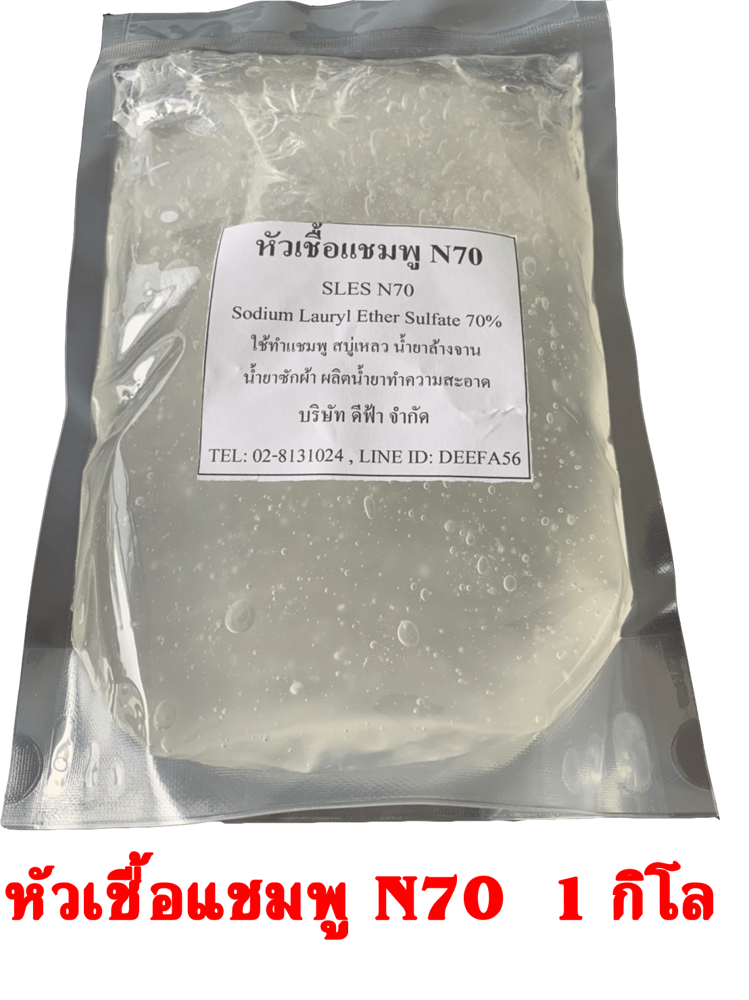
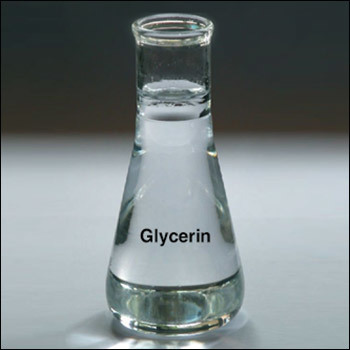
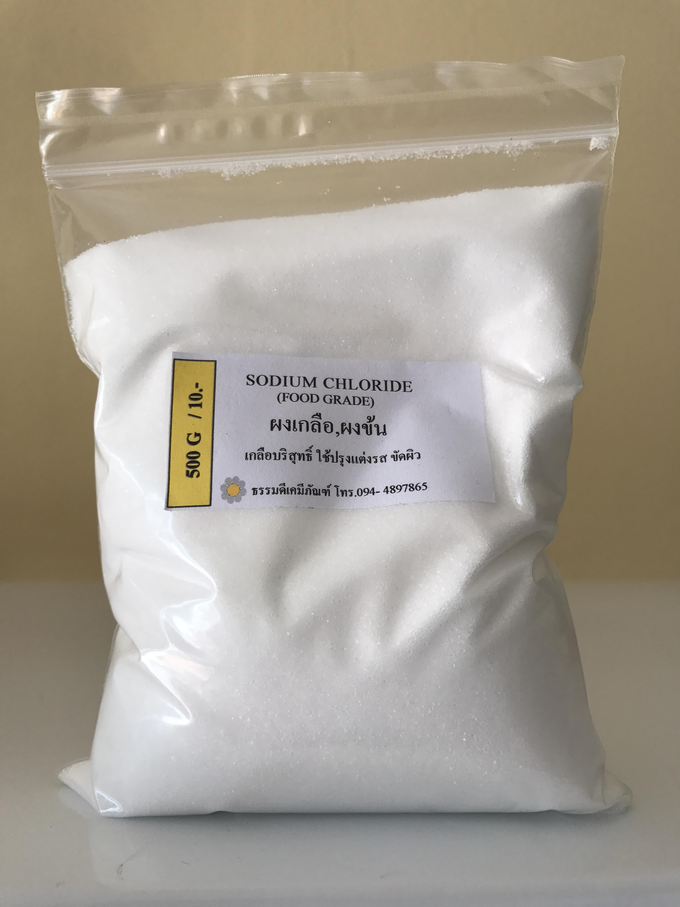

เจาะลึกส่วนผสมและคุณสมบัติทางวิทยาศาสตร์
คัดสรรวัตถุดิบธรรมชาติผสานพลังสารสกัดเปลือกส้มเข้มข้น เพื่อสบู่ล้างมือทำความสะอาดล้ำลึก ถนอมผิวมือ
1. วัตถุดิบและส่วนผสมหลัก (Ingredients)
คัดสรรวัตถุดิบปลอดภัย ปราศจากสารเคมีกัดกร่อน

เปลือกส้มสดธรรมชาติ (Fresh Orange Peels)
วัตถุดิบหลักที่ได้จากการแปรรูปขยะเปลือกส้มในชุมชน ผ่านการต้มสกัดความร้อนเพื่อดึงน้ำมันหอมระเหย สาร d-Limonene และวิตามินซีเข้มข้น ออกมาทำหน้าที่เป็นสารทำความสะอาดและดับกลิ่นคาวธรรมชาติ

หัวเชื้อสบู่ N70
สารทำความสะอาด มีประสิทธิภาพในการเข้าจับและทำลายคราบไขมัน คราบสิ่งสกปรกบนผิวมือ ให้ฟองนุ่มละเอียด ล้างออกง่าย ไม่ทิ้งสารตกค้างสะสม

กลีเซอรีนพืชบริสุทธิ์ (Vegetable Glycerin)
สารกักเก็บความชุ่มชื้นตามธรรมชาติ (Humectant) ทำหน้าที่ดึงดึงความชื้นเข้าสู่ผิวมือ ปกป้องเกราะป้องกันผิว ไม่ให้สูญเสียน้ำในขณะล้างมือ เหมาะอย่างยิ่งสำหรับคนที่ต้องล้างมือบ่อยๆ ตลอดวัน

ผงข้นเกลือบริสุทธิ์ (Sodium Chloride)
ทำหน้าที่ปรับระดับความหนืดของเนื้อสบู่เหลวล้างมือให้มีสัมผัสข้นพอดี ใช้งานง่าย ไม่เหลวเป็นน้ำจนเกินไป ช่วยให้กดใช้งานจากขวดหัวปั๊มได้อย่างสะดวกสบาย
2. คุณสมบัติทางวิทยาศาสตร์ (Properties & Benefits)
กลไกการทำงานของสารสำคัญเพื่อการล้างมือที่มีประสิทธิภาพ
ยับยั้งแบคทีเรียด้วย d-Limonene
สาร d-Limonene ธรรมชาติในเปลือกส้ม มีฤทธิ์ขัดขวางเยื่อหุ้มเซลล์ของเชื้อแบคทีเรียและเชื้อรา ทำลายเชื้อโรคบนผิวมือได้อย่างปลอดภัย โดยไม่ก่อให้เกิดการดื้อยาเหมือนสารเคมีสังเคราะห์
ทำความสะอาดล้ำลึกขจัดคราบมัน & ดับกลิ่นคาว
โมเลกุลน้ำมันหอมระเหยเปลือกส้มมีโครงสร้างจับตัวกับคราบไขมันและโมเลกุลกลิ่นคาว (เช่น กลิ่นคาวปลา กลิ่นกระเทียม) แล้วล้างออกด้วยน้ำได้อย่างรวดเร็ว ทิ้งไว้เพียงกลิ่นหอมสดชื่น
ขจัดกลิ่นติดมือ 100%ค่า pH 5.5 สมดุลผิวมือ
ควบคุมความเป็นกรด-ด่างให้อยู่ที่ pH 5.5 ซึ่งเป็นค่ากรดอ่อนๆ ตามธรรมชาติของผิวมือ ช่วยรักษาสมดุลเกราะป้องกันผิว (Acid Mantle) ล้างมือได้บ่อยเท่าที่ต้องการ โดยไม่ระคายเคือง
อ่อนโยนต่อผิวมืออยากทราบขั้นตอนการสกัดเปลือกส้มและกวนสบู่?
รับชมขั้นตอนกระบวนการผลิตสบู่เหลวล้างมือแบบอย่างละเอียดได้เลย
ไปที่หน้ากระบวนการผลิต →